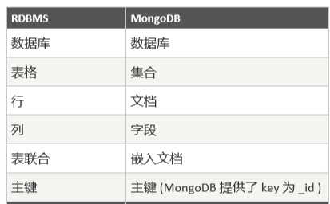
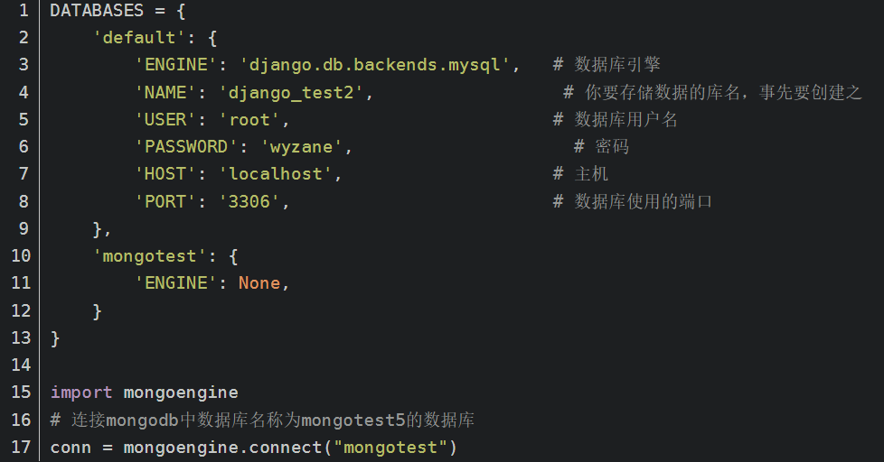
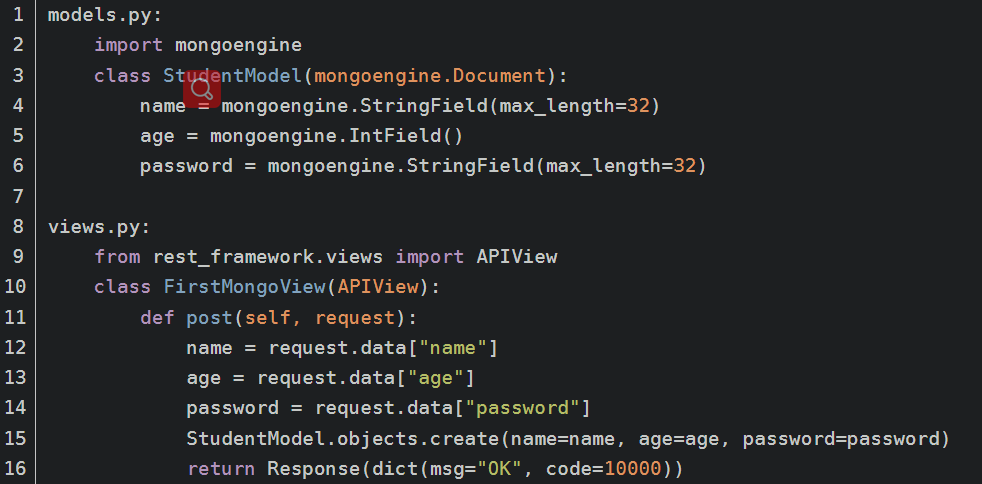
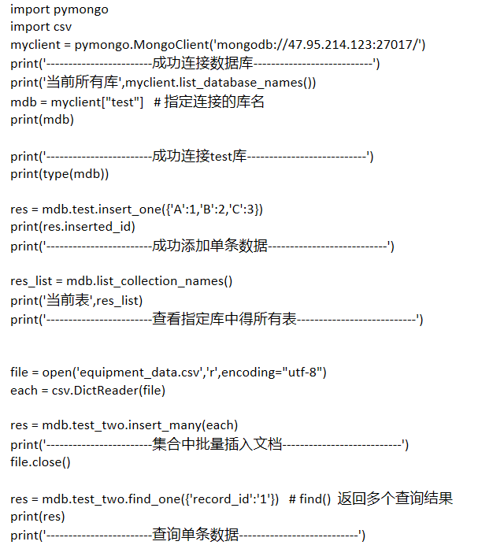

Django中使用Mongodb

简介
Mongodb 数据库 C++ 编写， 基于分布式文件存储系统得开源数据库系统。
将数据存储为一个文档，数据结构由键值（key => value） 组成。
主要特点
1、面向文档存储得数据库，操作起来简单容易。
2、添加索引
3、 支持语言： python 、 ruby、java、c++等多种语言
Mongodb 概念解析
Database - 数据库
collection - 数据库表/集合
Document - 数据记录行/ 文档
Field - 数据字段/域
Index - 索引
Primary key - 主键、MongoDB 自动将_id 字段设置为主键

安装Mongodb
本次测试使用了 Contos7 安装了Docker ，借用Docker搭建了 Mongodb。
docker搭建mongodb ：https://www.cnblogs.com/clwycwxw/p/14030934.html
下载/安装 Studio 3T软件，官方下载网站：https://mongoing.com/archives/24894
创建/启动Django项目
地址：https://www.cnblogs.com/sky-k/p/10943136.html
Django项目配置 Mongodb数据库 / 测试
第一步：在settings.py中配置mongodb和mysql,配置如下(可以同时使用mysql和mongodb):

第二步：向mongodb中插入数据
1.插入json类型数据

第三步：测试代码，各种操作
